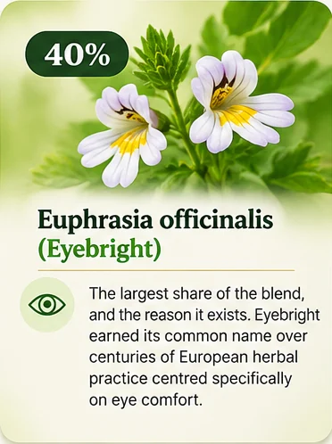
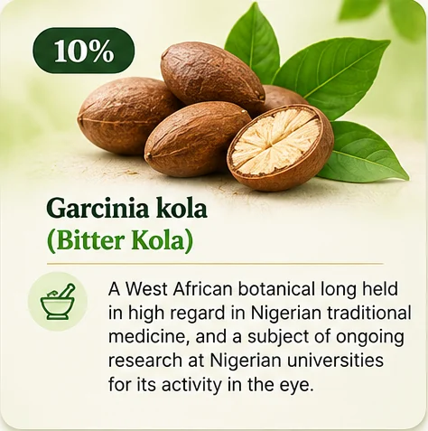
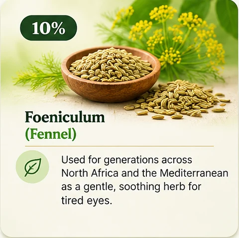
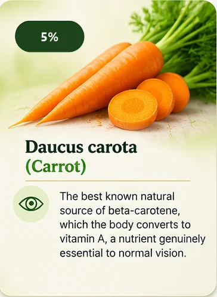
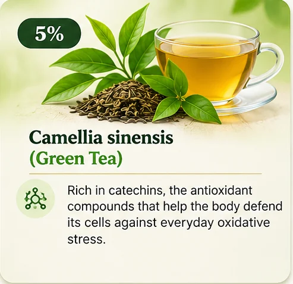
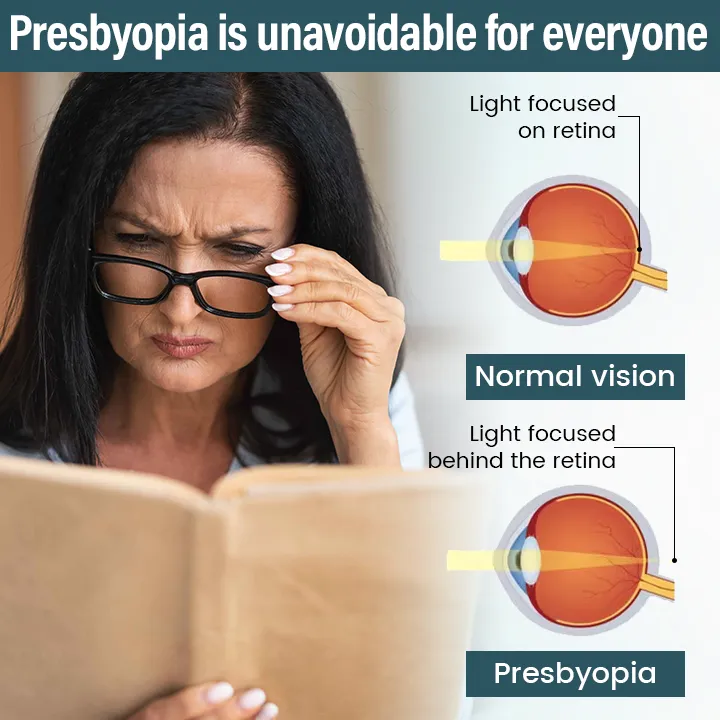
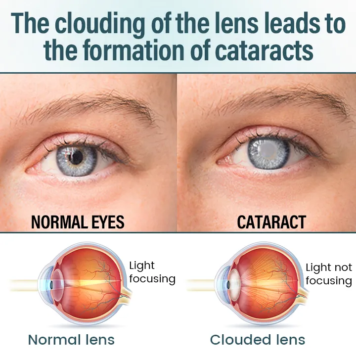

Blurring up close
Holding your phone further away than you used to. Menus and labels going soft.
NAFDAC Registered · A7-102324L
Moadop Herbal Tea blends seven botanicals, led by Eyebright, Ginkgo biloba and Bitter Kola, into a daily routine that supports your eyes through the strain of screens, sun, dust and age.
A7-102324L
NAFDAC registration you can verify yourself
7 botanicals
Full composition printed on every pack
36 states
Free delivery nationwide, plus FCT
Pay on arrival
Confirm by phone before anything ships
Why eyes tire
Phone screens before sunrise. Generator fumes and harmattan dust. Long drives into headlights. Years of reading in poor light. The strain is real, and it shows up as the things people quietly learn to live with.
If any of these are new, sudden or getting worse, see an optometrist or ophthalmologist. Moadop is a daily wellness routine, not a substitute for an eye exam.
Holding your phone further away than you used to. Menus and labels going soft.
Oncoming lights that scatter and star. Bright sun that forces a squint.
Gritty, tired eyes by afternoon. Rubbing them more than you should.
Heaviness behind the eyes after a long day of screens and close work.
What is actually inside
Most herbal products in this market will not tell you what is in them or in what proportion. Ours is on the back of every pack, in the exact percentages NAFDAC registered.





The routine
One tea bag in a cup of hot water. Let it sit three to five minutes until the colour deepens.
One cup in the morning and one in the evening, after eating. Taking it on a full stomach is part of the directions.
Twenty bags is ten days. Most people run a full month, which is three packs, before they judge it.


In their own voices
These are unedited recordings, videos and WhatsApp messages sent in by people who bought and used the tea. They describe personal experiences.
Customer review
Customer, Uganda
Customer, Lagos
Customer, Kenya
Customer review
Please read: the experiences above are personal accounts from individual customers and are not a promise of any particular result. Moadop Herbal Tea is registered as a herbal nutraceutical to support clear and healthy vision. It is not a medicine, it does not treat or cure eye disease, and it is not a substitute for surgery, prescribed medication or care from a qualified eye specialist. If you have been diagnosed with glaucoma, cataracts, diabetic retinopathy or any other eye condition, keep following your doctor's advice.
Check it yourself
Plenty of products claim NAFDAC approval. Ours has a number, and NAFDAC runs a public portal where anybody can look it up in about fifteen seconds.
Registration confirms the product is listed with NAFDAC in the herbal nutraceutical category. It is not an endorsement of any medical claim.
Choose your supply
At one bag in the morning and one at night, each 20-bag pack lasts ten days. The multi-packs exist because consistency is the whole point.
Included free with every order
Both are sent as digital downloads once your order is confirmed, at no extra cost, whichever package you choose.
Getting it to you
Our team calls to confirm your order and agree a delivery window before anything leaves the warehouse. In most locations you pay the dispatch rider when the pack is in your hand.
Lagos, Abuja (FCT), Ibadan, Abeokuta, Ikeja, Lekki, Ikorodu, Ota
Fastest routesPort Harcourt, Benin City, Enugu, Onitsha, Aba, Owerri, Uyo, Calabar, Warri, Asaba, Akure, Ilorin, Osogbo, Ado-Ekiti, Abakaliki, Awka, Umuahia, Yenagoa
South and South EastKano, Kaduna, Jos, Maiduguri, Sokoto, Zaria, Katsina, Bauchi, Gombe, Yola, Minna, Lokoja, Makurdi, Lafia, Jalingo, Birnin Kebbi, Dutse, Damaturu, Gusau
NorthDelivery is free nationwide. Timings are typical working-day estimates from the day your order is confirmed on the phone, not guarantees, and public holidays and weather can add a day. We also ship to customers in Ghana, Kenya and Uganda. Ask our team for timings outside Nigeria.
Take it consistently, exactly as the pack directs. If you are not satisfied with how you feel, contact our support team within the guarantee period and we will refund you. We would rather lose a sale than keep money from someone the product did not suit.
Before you order
Yes. It is registered as a herbal nutraceutical under A7-102324L, approved on 18 December 2024. You can confirm it yourself on the official NAFDAC product verification portal by entering that number.
Seven botanicals and nothing else: Eyebright 40%, Ginkgo biloba 20%, Turmeric 10%, Bitter Kola 10%, Fennel 10%, Carrot 5%, Green Tea 5%. The same list is printed on the back of every pack.
One tea bag in the morning and one in the evening, both after a meal. Steep three to five minutes in hot water. A pack holds 20 bags, so it lasts ten days at the recommended serving.
It is a herbal routine, not a quick fix, and anyone promising you an overnight change is not being straight with you. Most customers complete at least a full month, which is three packs, before judging it. Experiences differ from person to person.
Moadop does not replace anything your doctor has prescribed. If you are being treated for glaucoma, cataracts, diabetic retinopathy or any other condition, stay on your treatment and speak to your doctor or pharmacist before adding a herbal product. Ginkgo in particular is worth mentioning to your doctor if you take blood thinners.
Yes, payment on delivery is available in most locations. Our team calls to confirm your order and delivery window before anything is dispatched, so keep your phone close after ordering.
Delivery is free anywhere in Nigeria. Lagos and Abuja are usually one to two working days. Other states are usually two to four working days.
The pack is labelled for adults and children. If you are pregnant, breastfeeding, taking blood-thinning medication or managing a chronic condition, check with a qualified health professional first. Keep out of reach of young children.
Take it as directed, and if you are not satisfied, contact support within the guarantee period for a refund.
Final step
Fill this in and our team will call you to confirm the order and your delivery window. Keep your phone close. We usually call within minutes.